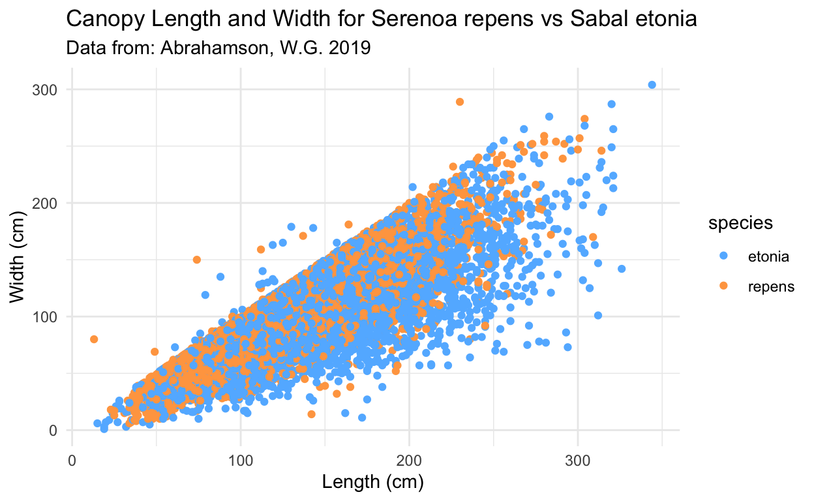
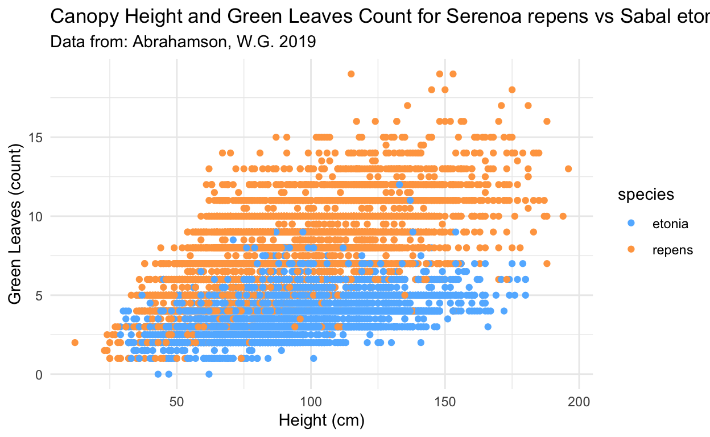
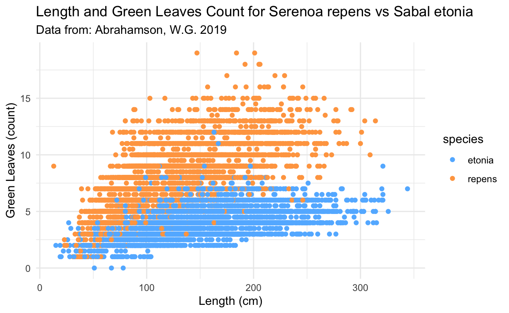

Binary logistic regression to test feasibility of using variables plant height (height), canopy length (length), canopy width (width), and number of green leaves (green_lvs) to classify whether a palmetto is species Serenoa repens or Sabal etonia.
knitr::opts_chunk$set(echo = TRUE, warning = FALSE, message = FALSE)
library(tidyverse)
library(here)
library(janitor)
library(patchwork)
library(cowplot)
library(GGally)
library(broom)
library(jtools)
library(caret)
library(AICcmodavg)
library(ggbeeswarm)
library(stargazer)
library(kableExtra)
library(modelsummary)
This report will employ binary logistic regression to test feasibility of using variables plant height (height), canopy length (length), canopy width (width), and number of green leaves (green_lvs) to classify whether a palmetto is species Serenoa repens or Sabal etonia.
The analysis will be performed twice, and will use cross validation to compare two models:
Data Source: The data used comes from: Abrahamson, W.G. 2019. Survival, growth and biomass estimates of two dominant palmetto species of south-central Florida from 1981 - 2017, ongoing at 5-year intervals ver 1. Environmental Data Initiative and metadata, including methods used for data collection can be found here EDI Data Portal. The first dataset, palmetto_data, contains survival and growth data across multiple years, habitats and experimental treatments. The second dataset, seedlings_data, follows the fate of marked putative palmetto seedlings in the field to assess survivorship and growth. The final dataset, harvested_palmetto_data, contains size data and estimated dry mass (biomass in grams) of 33 destructively harvested palmetto plants (17 S. repens and 16 S. etonia) of varying sizes and across habitats.
# Reading in the data
palmetto <- read_csv(here("_posts", "2022-02-18-binary-logistic-regression", "data", "palmetto.csv")) %>%
clean_names()
height = maximum height 1981-2017 [cm]length = widest length of the canopy 1981-2017 [cm]width = widest width of the canopy perpendicular to the canopy length 1981-2017 [cm]green_lvs = count of green leaves 1981-2017 [dimensionless]species column: 1 = Serenoa repens, 2 = Sabal etonia#Plotting Width
plot1 <- ggplot(data = palmetto_clean, aes(x = species, y = width)) +
geom_beeswarm(cex = 2, aes(color = species)) +
theme_minimal() +
labs(x = "Species", y = "Width (cm)", title = "Canopy Width S. repens, S. etonia", subtitle = "Data from: Abrahamson, W.G. 2019") +
guides(fill = guide_legend(title = "Species")) +
geom_boxplot(fill = NA, width = 0.4, outlier.color = NA) +
theme(axis.ticks.x = element_blank(),
axis.text.x = element_blank()) +
scale_color_manual(values = c("steelblue1", "tan1")) +
theme(legend.position = c(0.9, 0.75)) +
theme(legend.background = element_rect(fill="white",
size=0, linetype="solid"))
#Plotting Height
plot2 <- ggplot(data = palmetto_clean, aes(x = species, y = height)) +
geom_beeswarm(cex = 2, aes(color = species)) +
theme_minimal() +
labs(x = "Species", y = "Canopy Height (cm)", title = "Canopy Height S. repens, S. etonia", subtitle = "Data from: Abrahamson, W.G. 2019") +
guides(fill = guide_legend(title = "Species")) +
geom_boxplot(fill = NA, width = 0.4, outlier.color = NA) +
theme(axis.ticks.x = element_blank(),
axis.text.x = element_blank()) +
scale_color_manual(values = c("steelblue1", "tan1")) +
theme(legend.position = c(0.9, 0.80)) +
theme(legend.background = element_rect(fill="white",
size=0, linetype="solid"))
#Plotting Length
plot3 <- ggplot(data = palmetto_clean, aes(x = species, y = length)) +
geom_beeswarm(cex = 2, aes(color = species)) +
theme_minimal() +
labs(x = "Species", y = "Length (cm)", title = "Canopy Length S. repens, S. etonia", subtitle = "Data from: Abrahamson, W.G. 2019") +
guides(fill = guide_legend(title = "Species")) +
geom_boxplot(fill = NA, width = 0.4, outlier.color = NA) +
theme(axis.ticks.x = element_blank(),
axis.text.x = element_blank()) +
scale_color_manual(values = c("steelblue1", "tan1")) +
theme(legend.position = c(0.9, 0.82)) +
theme(legend.background = element_rect(fill="white",
size=0, linetype="solid"))
Figure 1: Spread of individual data points for the variables width, height, and length for Serenoa repend (orange) vs Sabtal etonia (blue). A) Illustrates canopy width as the widest width of the canopy perpendicular to the canopy length 1981-2017 [cm] between the two species, B) Illustrates maximum height 1981-2017 [cm] between the two species. C) Illustrates widest length of the canopy 1981-2017 [cm]. Green leaf spread is analyzed below.The box plots in black indicate the 25th and 75th percentile values of the data spread, the black line indicates the median value.
Takeaways In general, there seems to be significant overlap in the spread of the width values across the dataset as seen in Figure 1 Part A. Canopy height in Figure 1 Part B illustrates that at the upper and lower ends of the height range, S. repends tends to stand out thus at these points there may be some power in incorporating this variable in analysis. Canopy length has similar trends to canopy width and thus with significant overlap may not provide as much explanatory power in differentiating the two species except at the higher values or when length is around 50cm - 100cm (at these points there seems to be more datapoints for the Serenoa repends (orange))
ggplot(data = palmetto_clean, aes(x = length, y = width)) +
geom_point(aes(color = species)) +
theme_minimal() +
labs(x = "Length (cm)", y = "Width (cm)", title = "Canopy Length and Width for Serenoa repens vs Sabal etonia", subtitle = "Data from: Abrahamson, W.G. 2019") +
scale_color_manual(values = c("steelblue1", "tan1"))

Figure 2: Relationship between canopy length and canopy width for Serenoa repend (orange) vs Sabtal etonia (blue).
ggplot(data = palmetto_clean, aes(x = height, y = green_lvs)) +
geom_point(aes(color = species)) +
theme_minimal() +
labs(x = "Height (cm)", y = "Green Leaves (count)", title = "Canopy Height and Green Leaves Count for Serenoa repens vs Sabal etonia", subtitle = "Data from: Abrahamson, W.G. 2019") +
scale_color_manual(values = c("steelblue1", "tan1"))

Figure 3: Relationship between canopy height and green leaves for Serenoa repend (orange) vs Sabtal etonia (blue).
ggplot(data = palmetto_clean, aes(x = length, y = green_lvs)) +
geom_point(aes(color = species)) +
theme_minimal() +
labs(x = "Length (cm)", y = "Green Leaves (count)", title = "Length and Green Leaves Count for Serenoa repens vs Sabal etonia", subtitle = "Data from: Abrahamson, W.G. 2019") +
scale_color_manual(values = c("steelblue1", "tan1"))

Figure 4: Relationship between canopy length and green leaves for Serenoa repend (orange) vs Sabtal etonia (blue).
Overall Takeaways: The variables that are most likely to help classify species seem to be first and most clearly, the leaf count, followed by height and then length, and lastly width. There seems to be significant overlap in canopy width which indicates that is may not be an ideal candidate to help separate out species. Canopy height and length differ on the upper end of the scale (higher values), but have significant overlap near lower values. Leaf count visually reflects the largest difference between the two species and thus could be the most likely to help classify Serenoa repend vs Sabtal etonia (blue) most clearly.
#Converting to factor
palmetto_clean2<- palmetto %>%
select("species", "height", "length", "width", "green_lvs") %>%
mutate(species = case_when(species == 1 ~ "repens", species == 2 ~ "etonia")) %>%
mutate(species = as.factor(species)) %>%
drop_na()
levels(palmetto_clean2$species)
[1] "etonia" "repens"#establishing the relationships
f1 <- species ~ height + length + width + green_lvs
#Generalized Linear Model
species_blr1 <- glm(formula = f1,
data = palmetto_clean2,
family = "binomial")
Let’s look at the results
#species_blr1
summary(species_blr1)
Call:
glm(formula = f1, family = "binomial", data = palmetto_clean2)
Deviance Residuals:
Min 1Q Median 3Q Max
-4.7828 -0.2681 -0.0054 0.1725 3.3964
Coefficients:
Estimate Std. Error z value Pr(>|z|)
(Intercept) -3.226685 0.142071 -22.71 <2e-16 ***
height 0.029217 0.002306 12.67 <2e-16 ***
length -0.045823 0.001866 -24.56 <2e-16 ***
width -0.039443 0.002100 -18.78 <2e-16 ***
green_lvs 1.908475 0.038863 49.11 <2e-16 ***
---
Signif. codes: 0 '***' 0.001 '**' 0.01 '*' 0.05 '.' 0.1 ' ' 1
(Dispersion parameter for binomial family taken to be 1)
Null deviance: 17005.5 on 12266 degrees of freedom
Residual deviance: 5184.6 on 12262 degrees of freedom
AIC: 5194.6
Number of Fisher Scoring iterations: 7blr1_tidy <- broom::tidy(species_blr1)
f2 <- species ~ height + width + green_lvs
#Generalized Linear Model
species_blr2 <- glm(formula = f2,
data = palmetto_clean2,
family = "binomial")
Let’s look at the results
#species_blr2
summary(species_blr2)
Call:
glm(formula = f2, family = "binomial", data = palmetto_clean2)
Deviance Residuals:
Min 1Q Median 3Q Max
-4.7113 -0.3404 -0.0112 0.2167 3.4455
Coefficients:
Estimate Std. Error z value Pr(>|z|)
(Intercept) -3.767722 0.135314 -27.844 <2e-16 ***
height 0.002950 0.001881 1.568 0.117
width -0.069019 0.001785 -38.661 <2e-16 ***
green_lvs 1.884815 0.036127 52.172 <2e-16 ***
---
Signif. codes: 0 '***' 0.001 '**' 0.01 '*' 0.05 '.' 0.1 ' ' 1
(Dispersion parameter for binomial family taken to be 1)
Null deviance: 17005.5 on 12266 degrees of freedom
Residual deviance: 5979.5 on 12263 degrees of freedom
AIC: 5987.5
Number of Fisher Scoring iterations: 7blr2_tidy <- broom::tidy(species_blr2)
According to this AICc calculation, Model 1 has a lower value for AICc so just based on the AICc, we might anticipate that model 1 will be the better model.
set.seed(123)
tr_ctrl <- trainControl(method = "repeatedcv", number = 10, repeats = 10)
# Train the model
#Formula f1, data frame, method is the generalized linear model
model1_height_length_width_green_lvs <- train(f1, data = palmetto_clean2,
method = "glm", family = 'binomial',
trControl = tr_ctrl)
#summary(model1_height_length_width_green_lvs)
#model 1 accuracy 0.9169231 kappa 0.8338335
model2_height_width_green_lvs <- train(f2, data = palmetto_clean2,
method = "glm", family = 'binomial',
trControl = tr_ctrl)
#summary(model2_height_width_green_lvs)
#model 2 accuracy 0.8988022 kappa 0.7975858
#Since the accuracy of model 1 is higher, we may be able to state that model 1 is the better performing model
Takeaways : Based on the accuracy results of the corss validation, Model 1 (height, length, width, green_lvs) has a higher accuracy than Model 2 (height, width, green_lvs) and therefore it can be said that model 1 performs better at classification. This aligns with the AICc assessment carried out above.
For this reason, Model 1 will be selected to run on the entire dataset.
height, length, width, green_lvs) on entire datasetfinal_model <- glm(formula = f1,
data = palmetto_clean2,
family = "binomial")
final_table <- tidy(final_model) %>%
mutate(p.value = case_when(p.value <= 0.0001 ~ "< 0.0001")) %>%
rename("Term" = "term")
final_table %>%
kbl(digits = 3, caption = "Table 1: Binary Logistic Regression Model Outputs Showing the Variables, Coefficients, Standard Errors", col.names = c("Term", "Estimate", "Standard Error", "Statistic", "P Value")) %>%
kable_styling(bootstrap_options = c("striped", "hover"), full_width = F)
| Term | Estimate | Standard Error | Statistic | P Value |
|---|---|---|---|---|
| (Intercept) | -3.227 | 0.142 | -22.712 | < 0.0001 |
| height | 0.029 | 0.002 | 12.670 | < 0.0001 |
| length | -0.046 | 0.002 | -24.556 | < 0.0001 |
| width | -0.039 | 0.002 | -18.782 | < 0.0001 |
| green_lvs | 1.908 | 0.039 | 49.107 | < 0.0001 |
Final Model Equation: \[ \begin{aligned} \log\left[ \frac { \widehat{P( \operatorname{species} = \operatorname{repens} )} }{ 1 - \widehat{P( \operatorname{species} = \operatorname{repens} )} } \right] &= -3.23 + 0.03(\operatorname{height}) - 0.05(\operatorname{length}) - 0.04(\operatorname{width})\ + \\ &\quad 1.91(\operatorname{green\_lvs}) \end{aligned} \]
#creating a function
pred_acc <- function(x, y) {
accurate <- ifelse(x == y, 1, 0)
return(accurate)
}
#final_model Serenoa repend (orange) vs Sabtal etonia (blue)
#Adelie will be 0, Chinstrap will be 1)
#"etonia" will be 0, "repens" will be 1
model_success <- palmetto_clean2 %>%
mutate(predict_repens = predict(final_model, palmetto_clean2, type = "response")) %>%
mutate(predicted = ifelse(predict_repens >= 0.50, "repens", "etonia")) %>%
mutate(accurate = pred_acc(species, predicted)) %>%
mutate(correct = case_when(species == predicted ~ "Correct",
TRUE ~ "Incorrect"))
table2 <- model_success %>%
group_by(species) %>%
summarize(total_accurate = sum(accurate),
total_inaccurate = n() - sum(accurate),
model_success = mean(accurate)*100)
table2 %>%
kbl(digits = 2, caption = "Table 2: Model Accuracy by Species", col.names = c("Species", "Total Accurate", "Total Inaccurate", "% Correctly Classified")) %>%
kable_styling(bootstrap_options = c("striped", "hover"), full_width = F)
| Species | Total Accurate | Total Inaccurate | % Correctly Classified |
|---|---|---|---|
| etonia | 5701 | 454 | 92.62 |
| repens | 5548 | 564 | 90.77 |
CONCLUSIONS: Based on the model success metrics, one can see that on average the model was predicting correctly about 90% of the time. The model was slightly more accurate when predicting Sabtal etonia compared to Serenoa repend, but the difference was only around 2%.
Data source: Abrahamson, W.G. 2019. Survival, growth and biomass estimates of two dominant palmetto species of south-central Florida from 1981 - 2017, ongoing at 5-year intervals ver 1. Environmental Data Initiative. https://doi.org/10.6073/pasta/f2f96ec76fbbd4b9db431c79a770c4d5